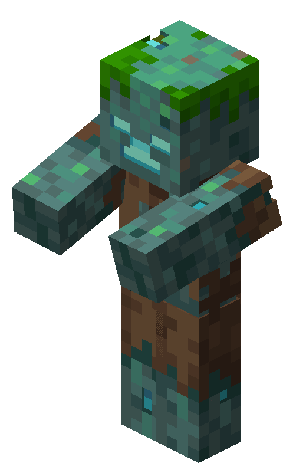

| Type | Drowned |
|---|---|
| HP | 30 |
| Attack | 5 |
| Defense | 2 |
| Range | 3 |
| Speed | 2 (3 on water) |
| Size | 2 × 2 |
| Phase 2 | ≤ 50% HP |
| Dimension | Overworld |
The Tidecaller
River Delta biome boss — a sea-born marauder that floods the arena and commands the depths.
The Tidecaller is a Drowned chieftain that has mastered the currents of the River Delta, flooding the arena and summoning reinforcements from the deep. Its speed and power increase dramatically on water tiles, making dry ground a precious resource.
Abilities
- Tidal Wave: Floods a 2-tile-wide column intersecting the player’s position with water tiles for 3 turns.
- Trident Storm: Hurls 3 tridents at the player’s position and its adjacent tiles, dealing 4 damage each. Telegraphed 1 turn in advance.
- Riptide Charge: While on a water tile, charges 4 tiles dealing ATK+3 damage and knocking the target back 2 tiles.
- Call of the Deep: Summons 1–2 Drowned (9 HP / 3 ATK) onto water tiles every 3 turns.
Phase 2 — “Deluge”
Triggers at ≤ 50% HP. On transition, the lower half of the arena floods permanently. Tidal Wave becomes 3 tiles wide and its water persists permanently rather than expiring. Gains +2 ATK on water tiles. Call of the Deep summons 2–3 Drowned every 2 turns.
Strategy
Hold the high ground — staying on dry tiles neutralizes the Tidecaller’s speed and ATK bonuses. Prioritize Drowned summons or they will push you into the flood.